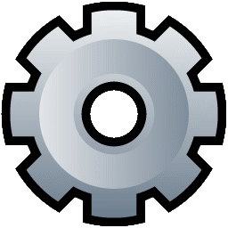

São gerados dois relatórios um assim que chega na sala ,a qual é chamada de relatório de entrada e um ao finalizar o expediente, chamadado de relatório de sáida, ambos serão utilizados pela coordernação da UFRN com o objetivo de ter controle da quantidade de impressões,xerox e assim por diante.
Impressora Preto e Branca
- Aperte na engrenagem.

- Busque por configurações da máquina.
- Em seguida busque por outros.
- Busque por relatório.
- Busque por sistema.
- Por fim aperte em contador de uso.
Impressora Colorida
- Aperte na engrenagem.
- Busque por configurações.
- Aperte no botão verde.
NEXT
- Busque por Relatórios.
- Por fim aperte em contador de uso.
-
Frente e Verso Colorida
-
Frente e Verso P e B